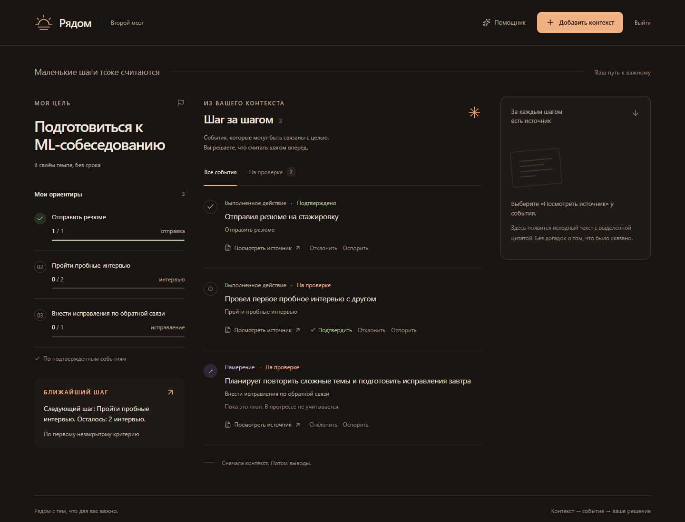

Личный второй мозг. С опорой на ваши записи.
Замечайте,
что приближает
вас к цели.
Вы живёте, пробуете, делаете маленькие шаги. Рядом связывает их с целью и показывает, на чём основан прогресс. Подтверждать его решаете вы.
А пока можно пройти пример прямо здесь.
Попасть на ML-стажировку
Немного волновался.
Сегодня отправил резюме
на ML-стажировку.
Один отклик уже есть
После вашего подтвержденияСчитаем подтверждённые отклики по выбранному критерию.
Знакомое ощущение
Столько всего было.
А что сдвинулось?
Резюме в одном чате. Хорошая мысль в заметках. Вчерашний разговор уже трудно вспомнить. Когда всё разбросано, даже свой прогресс приходится собирать заново.
Рядом помогает связать выбранные записи с конкретной целью. И вернуться к словам, из которых получился каждый шаг.
Следующий этап · концепция развития
Не пересказывать день.
Сохранить его смысл.
Агенту нужен контекст. Но постоянно дописывать его вручную становится отдельной работой. Мы хотим убрать это ограничение: вместо десятка заметок о дне использовать запись с диктофона на ваших устройствах.
Вы включаете запись, а после её остановки система готовит краткое резюме, собирает события по темам и связывает важное с вашей целью. Проверка и подтверждение действий остаются за вами.
-
01
День в аудио
Вы сами включаете диктофон на телефоне или другом своём устройстве.
-
02
Короткое резюме
Суммаризация выделяет решения, договорённости и важные события из записи.
-
03
Контекст у цели
События компонуются по темам. Предложенные шаги проверяете и подтверждаете вы.
Что есть сейчас: ручной импорт выбранного текста и короткого аудио. Запись дня с устройств, её фоновая обработка и суммаризация дня пока являются концепцией следующей версии.
Попробуйте за полминуты
«Покажи, почему ты считаешь,
что я продвинулся».
Пройдите путь от намерения
до подтверждённого действия.
Демонстрация на синтетических данных. Без запроса к AI и без ввода ваших данных.
01 / Намерение
Ещё не действие«Завтра отправлю резюме»
План есть. Действия пока нет.
Намерение остаётся в истории, но не прибавляет отклик к критерию. Счётчик по-прежнему на нуле.
У каждого шага есть основание
Прогресс, который
можно проверить.
AI предлагает связь. Вы проверяете её. Код считает подтверждённые действия.
Цитата показывает, откуда взялось событие. Она не является независимой проверкой того, что оно действительно произошло.
-
01
Вернуться к источнику
У события есть исходная запись и точная цитата. Основание можно прочитать самому.
-
02
Решение остаётся за вами
Предложение AI не становится прогрессом само. Выполненное действие нужно подтвердить.
-
03
Счётчики вычисляет код
Намерения не засчитываются. Повторный импорт не увеличивает результат. Отклонение пересчитывает его.
Реальный экран продукта
Запись стала событием.
Решение приняли вы.
Тестовый кандидат · 25 октября 2026
Настоящие распознавание и
модель

Кадр из сквозной проверки команды: аудио → расшифровка → точная цитата → ручное подтверждение. Это результат тестового запуска, а не подтверждение готовности публичного серверного выпуска.
Честно о текущей версии
Маленький продукт.
Конкретный сценарий.
Рядом создан для хакатона. Мы проверяем путь от записи до подтверждённого прогресса, а не обещаем помнить всю вашу жизнь.
Исходный код проектаПроверен текстовый путь
Ручная цель с тремя критериями, импорт текста, AI-предложения с цитатами, подтверждение, повтор и отклонение проверены через интерфейс. Сохранность хранилища отдельно проверена перезапуском процесса.
Короткое аудио: тестовый сценарий проверен
Загрузка записи, распознавание, цитата и подтверждение прошли сквозную проверку на тестовом кандидате. Приёмка общего серверного выпуска ещё идёт.
Что важно знать перед использованием
Цель и критерии вводятся вручную. Ближайший шаг выбирается по правилу, а не модельным коучем.
Для AI-обработки выбранные данные передаются внешнему провайдеру. Это не полностью локальный AI. Для знакомства используйте синтетический текст.
Постоянного прослушивания, автоматического чтения почты и мессенджеров нет. Интерактивный пример выше является иллюстрацией; кадр продукта снят с настоящего тестового кандидата на синтетических данных.
Статус проверен по материалам команды 25 октября 2026.
Не каждый день кажется большим
К вашей цели.
Шаг за шагом.
Держите рядом цель. И то, что уже получилось.